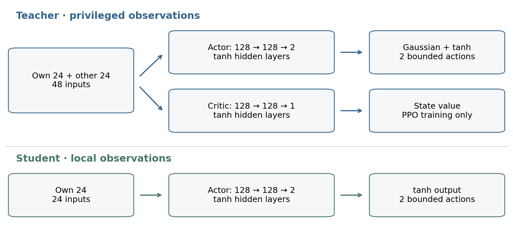
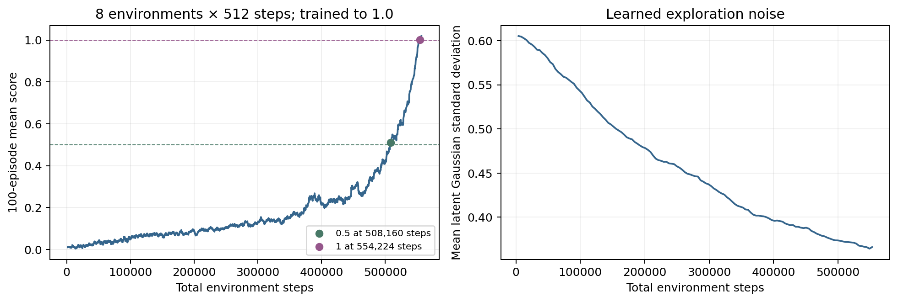
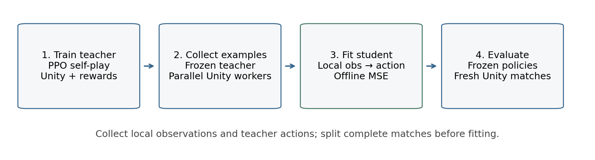
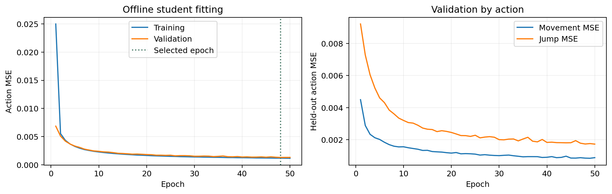
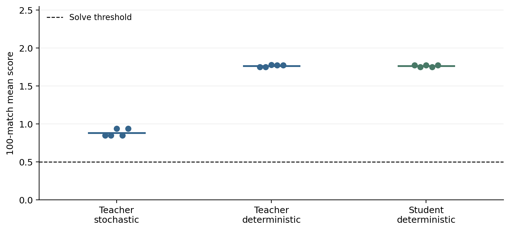
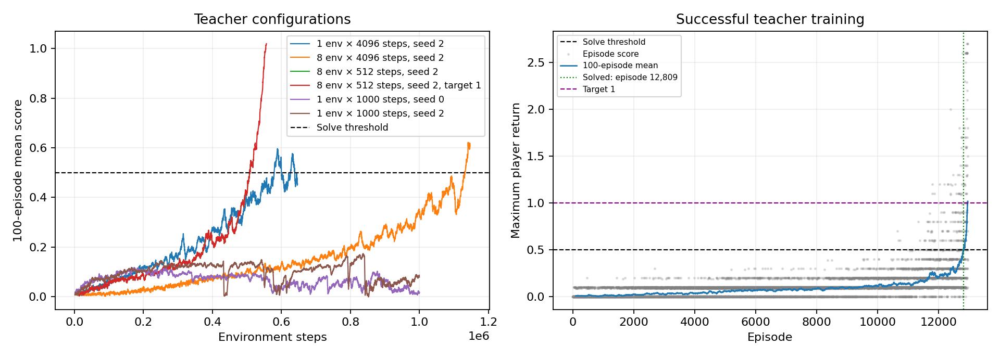

Udacity · Collaboration and Competition · 21 November 2026
PPO Teacher and
Local Student for Tennis
A shared teacher learns with both players’ observations. A smaller student then learns its actions from local observations alone.
Main experiment: eight parallel environments, 512 steps per environment,
training continued to a 100-episode mean of 1.0. The teacher first passes 0.5 at 508,160 environment steps
and 1.0 at 554,224 steps. The final distilled student scores
1.766 ± 0.013 across five fresh evaluation seeds.
| Frozen policy | Inputs/player | Mean ± SD | Seeds ≥ 0.5 |
|---|
| Teacher, stochastic | 48 | 0.884 ± 0.051 | 5/5 |
| Teacher, deterministic | 48 | 1.766 ± 0.014 | 5/5 |
| Student, deterministic | 24 | 1.766 ± 0.013 | 5/5 |
Each seed mean covers 100 complete games. SD is the sample standard deviation of the five seed means.
These are evaluations of one policy, not independent training repetitions.
1. Problem and scoring
Two simulated players cooperate to keep a ball in play. A successful return earns +0.1;
dropping the ball or sending it out of bounds incurs −0.01. Each player receives eight local position/velocity values,
stacked over three frames into 24 inputs, and controls horizontal motion and jumping with two continuous actions in [−1, 1].
An episode score is the larger of the two players’ total undiscounted returns. The official solve criterion is a mean
of at least 0.5 over 100 consecutive completed episodes. The extended training target of 1.0 is an additional experiment,
not a change to that criterion. Unity time-limit endings count as complete games; artificial evaluation safety cutoffs do not.
The README embeds a short recording of the final student in the actual Unity environment. It is a demonstration,
separate from the 500-game evaluation.
2. Learning algorithm and implementation
The teacher learns through shared-policy self-play with clipped Proximal Policy Optimization
(Schulman et al., 2017). Each player receives
[own 24 values, other player’s 24 values]. The actor and critic therefore each use 48 privileged inputs.
Rewards, episode returns and Generalized Advantage Estimation
(Schulman et al., 2015) remain separate for every player and environment.

Separate teacher actor and critic; the deployed student uses only its own observation and has no critic.
The actor predicts Gaussian means and learns a state-independent log standard deviation. Sampled latent actions pass
through tanh; action log probabilities include the change-of-variables correction. The critic predicts a state value.
PPO loss = −mean[min(rÂ, clip(r, 1−ε, 1+ε)Â)] + 0.5 × mean[(V−R)²]
Advantages are normalized across the collected batch. True terminals zero the bootstrap value; time limits bootstrap
the terminal observation. GAE stops at episode boundaries, so it never carries reward estimates into a reset game.
Parallel collection
Eight workers each hold a frozen copy of the current teacher and collect 512 steps independently. They exchange
parameters and trajectories once per rollout. The parent combines 8 × 512 × 2 = 8,192 player samples,
makes four shuffled minibatch passes, then publishes new parameters. Episodes continue across rollout boundaries.
teacher_model.py defines the networks; teacher_ppo.py implements PPO/GAE;
teacher_rollouts.py owns worker collection; train_teacher.py logs scores and checkpoints.
Episode ordering is rollout step then environment index, independent of worker completion order.
3. Main experiment: training beyond the solve threshold
This experiment restarts from seed 2 with the same initial settings as the successful 512-step run; it is not a
checkpoint resume. It trains to 1.0 while retaining the first 0.5 crossing and its policy. All other PPO settings remain fixed.
| Setting | Teacher | Student |
|---|
| Network | 48 → 128 → 128 → Gaussian(2); critic(1) | 24 → 128 → 128 → 2 |
| Hidden/output activations | tanh / squashed Gaussian | tanh / tanh |
| Optimizer / learning rate | Adam / 0.0003 | Adam / 0.0003 |
| Minibatch | 512 player samples | 1,024 examples |
| Collection | 8 environments × 512 steps | Offline demonstrations |
| Epochs | 4 per rollout | Up to 50; patience 5 |
| Discount γ / GAE λ | 0.995 / 0.95 | — |
| Clip ε / value coefficient | 0.2 / 0.5 | — |
| Initial latent log σ | −0.5 | — |
| Loss | Clipped PPO + value MSE | Action MSE |
| First training mean | Episode | Environment steps | Observed wall time |
|---|
| .5 | 12,809 | 508,160 | 3m 24s |
| 1.0 | 12,944 | 554,224 | 3m 42s |
The first 0.5 crossing matches the earlier short-rollout run at 508,160 steps. The extra training to 1.0 uses
46,064 additional environment steps.
The first qualifying 1.0 window has mean 1.0009; the best window over the final rollout reaches
1.0189.

The extended learning curve and learned exploration scale. Markers denote first crossings; collection finishes the whole rollout before stopping.
Environment steps sum over all eight games; player transitions are twice that number. The run logs
557,056 total steps because the final rollout is completed before scores are checked.
Wall times record when the completed rollout made each crossing observable.
4. Distilling the final teacher

Teacher PPO, fresh demonstration collection, offline student fitting and frozen-policy evaluation are separate stages.
The final teacher is frozen and run deterministically: actions are tanh of the predicted Gaussian means.
16 independent Unity workers collect 514,198 player examples
from 374 completed games. Both players contribute their current local observation and the matching
teacher action computed from both players’ observations.
The split assigns whole matches to training or validation, including both players and all frames.
There are 469,940 training examples from 339 games and
44,258 validation examples from 35 games.
Dataset shards, the manifest and the student config retain teacher fingerprints and checksums.
A freshly initialized student learns offline with action mean squared error, a direct action-regression form of policy
distillation (Rusu et al., 2015). It receives only 24 local inputs and
requires neither Unity nor rewards during fitting. There is no online student reinforcement learning.

Training and held-out action errors; the selected checkpoint minimizes validation MSE, independently of gameplay scores.
Fitting completes 50 epochs in 1m 10s, using
4 CPU threads. The selected epoch is 48; validation MSE falls from
0.59331 to 0.00130.
Selected movement/jump MSEs are 0.00086/0.00174,
with 99.8% jump-threshold agreement.
The teacher’s final checkpoint.pt, the student’s final-epoch checkpoint.pt, and the
validation-selected student best.pt are retained. Evaluation and the GIF use the selected student.
5. Frozen-policy results and timing
Each policy plays 100 games on each of seeds 10002–10006, with no weight updates. These simulator seeds are
distinct from training and demonstration seeds. Both players use the same shared policy, each with its appropriate
observation ordering. All 500 games per policy are included; scores are not selected from favorable windows.
| Policy | Inputs | Mean ± SD | Passing seeds | Unity time limits |
|---|
| Teacher, stochastic | 48 | 0.884 ± 0.051 | 5/5 | 37/500 |
| Teacher, deterministic | 48 | 1.766 ± 0.014 | 5/5 | 333/500 |
| Student, deterministic | 24 | 1.766 ± 0.013 | 5/5 | 333/500 |

Each dot is a fresh-seed 100-game mean; horizontal marks show the five-seed mean. The dashed line is the official solve threshold.
The deterministic teacher and distilled student have effectively equal mean scores in this evaluation. Removing sampling noise is evaluated separately from distillation; the deterministic teacher is
the relevant action-generating baseline. Evaluation safety cutoffs: teacher stochastic 0,
teacher deterministic 0, student 0.
A 1.0 training window is a stopping event, not a guarantee that the frozen teacher will average at least 1.0
on every fresh seed. The evaluation above measures that separately.
| Main pipeline stage | Wall time |
|---|
| Teacher: initialization through target 1.0 and shutdown | 3m 42s |
| Fresh demonstrations (16 workers) | 1m 16s |
| Offline student fitting, including thread selection | 1m 10s |
| Sum of the three stages; excludes evaluation | 6m 08s |
Hardware: Intel Core i5-12600K (10 physical cores / 16 logical CPUs), approximately 94 GiB RAM,
CPU PyTorch 2.14.1, NumPy 1.26.4. No GPU training. Wall times depend on concurrent desktop jobs and are not
controlled benchmarks. Search runs, the interrupted attempt, evaluation and GIF capture are excluded from the stage sum.
6. Earlier experiments and retained comparisons
| Experiment | Envs × steps/env | Epochs / γ | Best mean | Steps to 0.5 |
|---|
| Initial PPO, seed 0 | 1 × 1,000 | 10 / 0.99 | 0.118 | Not solved |
| Initial PPO, seed 2 | 1 × 1,000 | 10 / 0.99 | 0.174 | Not solved |
| Adjusted single environment | 1 × 4,096 | 4 / 0.995 | 0.597 | 579,040 |
| Parallel, long rollout | 8 × 4,096 | 4 / 0.995 | 0.622 | 1,130,968 |
| Parallel, short rollout; stop 0.5 | 8 × 512 | 4 / 0.995 | 0.549 | 508,160 |
| Main: parallel, short rollout; stop 1 | 8 × 512 | 4 / 0.995 | 1.019 | 508,160 |

Retained teacher trials plotted against aggregate environment steps. Right: raw episode scores and rolling mean of the extended main run.
Initial PPO: two single-environment runs used 1,000 steps, 10 epochs and γ=0.99, and neither
solved within one million steps. The adjusted single-environment run used 4,096 steps, four epochs and γ=0.995,
first solving at 579,040 steps. Those three changes were simultaneous, so their individual effects cannot be separated.
Parallel implementation: the original parent selected actions and synchronized workers at every
simulator step. Moving inference and complete-rollout collection into workers removed that per-step exchange.
A short equal-batch CPU benchmark improved eight-worker throughput from 1,391 to 2,351 aggregate steps/s;
the new single-worker result was 690 steps/s. These three-update timings measure execution speed, not learning.
Rollout comparison: retaining 4,096 steps per environment enlarged the batch to 65,536 player
samples and first solved at 1,130,968 steps. Reducing to 512 steps restored 8,192 player samples and solved at 508,160:
55.1% fewer steps. This was also 12.2% fewer than the adjusted single-environment run.
The stop-at-0.5 short run and the extended main run have the same initial learning curve, not independent evidence.
| Earlier frozen policy | Stochastic teacher | Deterministic teacher | Student |
|---|
| Adjusted single-env pipeline | 0.537 ± 0.050 | 1.244 ± 0.024 | 2.143 ± 0.148 |
| 8 env × 4096; stop .5 | 0.459 ± 0.044 | 1.100 ± 0.073 | Not distilled |
| 8 env × 512; stop .5 | 0.569 ± 0.043 | 2.150 ± 0.060 | Not distilled |
The historical single-environment teacher checkpoint was selected before correcting time-limit
episode logging; its rewards were re-audited and its frozen checkpoint evaluated directly. An initial target-1 attempt
received SIGTERM near mean 0.983; its artifacts remain separate. The main result uses a complete seeded rerun.
7. Discussion
Why shorter rollouts performed better here
The clearest change is how often learning influences the next collected experience.
With eight environments and 4,096 steps each, the policy remains frozen for 32,768 aggregate environment steps.
At 512 steps, the learner refreshes the policy after 4,096 aggregate steps—eight times sooner. It can therefore
exploit newly learned returns and adjust its value estimates and exploration before collecting as much additional data.
Both settings reuse every sample for four epochs with minibatches of 512. A long rollout performs 512 optimizer
steps per 32,768 environment steps; a short rollout performs 64 per 4,096. Thus optimizer steps per environment
step and epochs per sample are unchanged. The benefit cannot be described as simply doing more gradient updates.
The shorter configuration interleaves collection and learning more frequently, and normalizes advantages over a
smaller, more recent batch. These are plausible explanations, not isolated causal findings.
Shorter rollouts do not imply incomplete training episodes or forced resets. Games persist across boundaries;
the critic bootstraps the final observation. They do shorten GAE segments, which can increase dependence on value
accuracy. Here γλ = 0.94525, corresponding to a decay scale of about 18 steps; this suggests 512 steps need not
truncate most of the estimator’s weight, although it does not prove that 512 is optimal. The interaction between
environment count, segment length and batch size is also described by
Huang et al. (2022).
Why the earlier long-rollout adjustment is not contradictory
The initial-to-adjusted experiment simultaneously reduced epochs from ten to four and raised γ from .99 to .995.
It did not demonstrate that long trajectories alone caused learning. The current comparison keeps those improved
settings and eight environments fixed, while changing rollout length and therefore total batch size.
What distillation changes
The student approximates deterministic teacher actions using half the inputs and no critic. Regression can smooth
action variation, but imperfect imitation also changes which states two self-playing students visit. Higher or lower
returns need not track action MSE monotonically. The deterministic teacher and distilled student have effectively equal mean scores in this evaluation. A general claim that students always outperform
teachers would go beyond these measurements.
Does continuing to 1.0 improve the deployed policy?
The stop-at-0.5 short-rollout teacher scored 0.569 ± 0.043 stochastically and
2.150 ± 0.060 deterministically. After training to 1.0, the corresponding scores are
0.884 ± 0.051 and 1.766 ± 0.014. A higher sampled training window need not improve mean-action play:
these are different action-selection rules, and PPO optimizes returns under sampled actions.
The final student must be assessed against its actual deterministic teacher and its own gameplay results,
not inferred from the teacher’s stopping threshold or its imitation error.
The earlier single-environment pipeline’s student scored 2.143 ± 0.148, compared with
1.766 ± 0.013 for the current student. Thus the larger teacher stopping target did not deliver a higher-scoring
student in these experiments. The new student closely preserves its own teacher’s performance with local inputs;
the older policies remain available. Different demonstration distributions also mean that lower action MSE across
datasets cannot by itself rank gameplay quality.
Limits and next experiments
Most successful configurations have one training seed. The repeated seed-2 short runs do not establish robustness;
five evaluation seeds measure variation of one frozen policy. Self-play may favor partners with the same behavior,
and the simulator time limit caps achievable episode returns. Useful next steps are several independent training seeds,
a fixed-step-budget sweep of 256/512/1,024 steps, KL/clip-fraction diagnostics, and mixed teacher–student partners.
8. Reproduction and saved policies
The README gives setup, training, evaluation and recording commands. Completed run configs preserve the actual
settings and are immutable records; fresh prepared reproduction configs create separate runs and datasets.
| Artifact | Location |
|---|
| Main teacher run and all learning logs | runs/teacher_ppo_parallel8_roll512_target1_seed2_retry |
| Final teacher used for demonstrations/evaluation | runs/teacher_ppo_parallel8_roll512_target1_seed2_retry/checkpoint.pt |
| First .5 policy snapshot | runs/teacher_ppo_parallel8_roll512_target1_seed2_retry/milestone_0.5.pt |
| First 1.0 policy snapshot | runs/teacher_ppo_parallel8_roll512_target1_seed2_retry/milestone_1.0.pt |
| Demonstration manifest and checksummed shards | datasets/teacher_demonstrations_target1 |
| Student fitting logs and final-epoch checkpoint | runs/student_distill_target1_seed0 |
| Selected deployed student | runs/student_distill_target1_seed0/best.pt |
| Rendered student gameplay and provenance | assets/student_playing.gif; assets/student_playing.json |
Teacher and student checkpoints include reconstruction settings. The student’s selected checkpoint is determined
only by held-out action MSE. Dataset and evaluation records carry checkpoint hashes so the reported policies can
be traced to the exact collected examples and evaluation results.
References
Schulman, J., Wolski, F., Dhariwal, P., Radford, A., & Klimov, O. (2017).
Proximal Policy Optimization Algorithms. arXiv:1707.06347.
Schulman, J., Moritz, P., Levine, S., Jordan, M., & Abbeel, P. (2015).
High-Dimensional Continuous Control Using Generalized Advantage Estimation.
arXiv:1506.02438.
Rusu, A. A., et al. (2015). Policy Distillation.
arXiv:1511.06295.
Huang, S., Dossa, R. F. J., Raffin, A., Kanervisto, A., & Wang, W. (2022).
The 37 Implementation Details of Proximal Policy Optimization. ICLR Blog Track.
Implementation analysis.